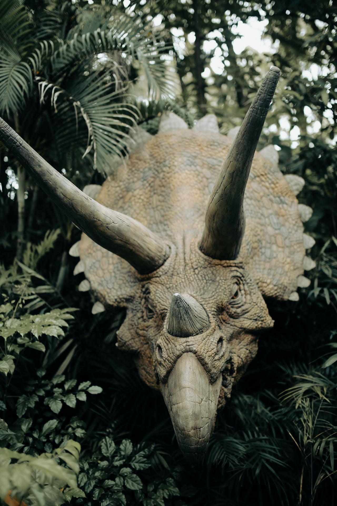

Did you Know?
- The Isle of Wight, just off the coast of England is often called the dinosaur island.
- Did you know that the company Tyson recalled nearly 30,000 pounds of Dino Chicken Nuggets that were produced on sept 5.
- Fluffy coats helped dinosaurs survive in colder climates.
- In the original Jurassic Park movie There was only 15 minutes that contained dinosaurs, there was 6 of CGI and 9 of animatronics.
- Dinosaurs usually walked on their toes.
- It’s estimated that a stegosaurus brain weight around 2.5 ounces.
- Dinosaurs constantly replaces their teeth, like many reptiles.
- Only the two horns on the top of a triceratops’ skull were made of bones.
- Micropachycephalosaurus is the longest dinosaur name.
- The T-rex had a bite force that rivals the great white shark.
- There are roughly around 700 different species of dinosaurs.
